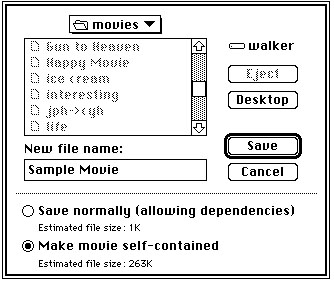

Saving Movies in Movie Files
The Movie Toolbox allows you to save movies in movie files. Movie files have a file type of'MooV'. Typically, the movie itself is stored in the resource fork of the movie file. The movie's data may reside in the data fork of the movie file, or in other files.When you create a new movie, you must create a file to contain the movie data. Use the
CreateMovieFilefunction (described on page 2-84) to create a new movie file. This function returns a file system reference number that you must use to identify the file to other Movie Toolbox functions. You can add your movie to the file by calling theAddMovieResourcefunction (described on page 2-90). When you are done with the file, you close it by calling theCloseMovieFilefunction (described on page 2-87). Your movie is now safely stored in the movie file.If you are working with an existing movie, you must read that movie from a movie file or choose a movie from the scrap. You first open the movie file by calling the
OpenMovieFilefunction (described on page 2-86). You then load the movie from that file by calling theNewMovieFromFilefunction (described on page 2-76). Alternatively, you can use theNewMovieFromHandlefunction (described on page 2-78). After you have edited the movie, you must store it in your file if you want to save your changes. If you want to replace the old movie, use theUpdateMovieResourcefunction (described on page 2-91). If you want to keep the old movie, create a new movie by calling theAddMovieResourcefunction described on page 2-90 (a movie file may contain more than one movie resource). You should then close the movie file by calling theCloseMovieFilefunction (described on page 2-87).The Movie Toolbox maintains a changed flag for each movie your application loads. You can use this flag to determine when to save your movie. The Movie Toolbox sets this flag to
truewhenever you make a change to a movie that should be saved. You can read this flag by calling theHasMovieChangedfunction (described on page 2-88). You can set the flag tofalseby calling theClearMovieChangedfunction (described on page 2-89).The Movie Toolbox provides two functions for deleting movies:
DeleteMovieFileandRemoveMovieResource. UseDeleteMovieFile(described on page 2-87) to delete a movie file. UseRemoveMovieResource(described on page 2-91) to delete a movie from a movie file. Don't use the corresponding standard Macintosh Toolbox routines (FSpDeleteandRmveResource). The Movie Toolbox maintains movie references between files correctly whereas these routines do not.The Movie Toolbox allows you to create movie files that contain all of their movie data, rather than containing references to data in other files. This may be necessary when creating a version of a movie that is to be moved to another computer system. The Movie Toolbox also accommodates operating systems that do not recognize files that contain more than one fork. In this case, you can use the
FlattenMovieorFlattenMovieDatafunctions (described on page 2-93 and page 2-94, respectively) to create a movie file that stores the movie and all of its data in the data fork of a Macintosh file. You can then transfer that file to another operating system. Your application may allow the user to decide how to save the movie. In this case, you can use a Save As dialog box similar to the one shown in Figure 2-32. In this dialog box, the user can elect to create a movie file that contains all of the data for a movie by clicking the "Make movie self-contained" radio button.Figure 2-32 A sample movie Save As dialog box
